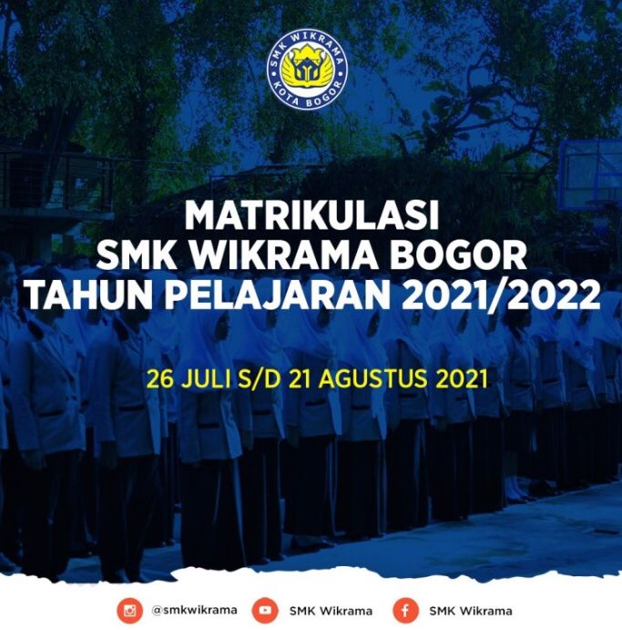

MATRIKULASI

Matrikulasi adalah kegiatan pembelajaran yang dilakukan untuk memenuhi kekurangan dalam hal pengetahuan,
ketrampilan dan sikap yang berfungsi untuk mengetahui kemampuan awal/ pemetaan kemampuan awal peserta didik yang diperlukan untuk mengikuti kegiatan pembelajaran.
Waktu pelaksanaan Matrikulasi di SMK Wikrama Bogor yaitu selama 4 minggu (26 Juli - 21 Agustus 2021) secara online dengan sistem sinkronus dan asinkronus. Diikuti oleh 585 peserta didik baru.